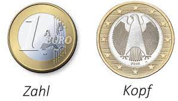

4 Übungsaufgaben
Aufgabe 1
Nils hat beim Spielen sechsmal gewürfelt und keine 6 erhalten. Er ist beleidigt und erklärt: “In jedem Wurf beträgt die Wahrscheinlichkeit für eine 6 ein Sechstel. Bei sechs Würfen ist sie sechsmal so hoch, also 1.”
Nimm begründet Stellung zu Nils’ Aussage.
Aufgabe 2

Theo mag gern Himbeereis, Schokoeis und Vanilleeis. Seine Schwester Maja mag am liebsten Himbeereis, Schokoeis und Zitroneneis. Jeder der beiden darf sich zwei Kugeln Eis aussuchen. Beide wollen zwei Kugeln aus den jeweils drei Lieblingssorten auswählen.
- Gib an, wie viele Möglichkeiten Theo hat, sein Eis zusammenzustellen, wenn er sich vorstellen kann, zwei gleiche Kugeln zu nehmen. (Wer tut denn sowas!)
Man kann ein Baumdiagramm zeichnen, um alle Möglichkeiten übersichtlich aufzulisten:

Hier muss man nur noch die Pfadenden zählen: Es gibt 9 Pfadenden. Folglich hat Theo 9 Möglichkeiten sein Eis zusammenzustellen.
Natürlich kann man diese Aufgabe auch ohne Baumdiagramm lösen. Theo hat für die erste und für die zweite Kugel jeweils drei Eissorten zur Auswahl. Damit hat er \(3 \cdot 3 = 9\) Möglichkeiten, wie er sein Eis zusammenstellen kann.
- Gib an, wie viele Möglichkeiten Maja hat, ihr Eis zusammenzustellen, wenn sie auf jeden Fall zwei verschiedene Sorten haben möchte.
Natürlich kann man auch hier ein Baumdiagramm zeichnen, um alle Möglichkeiten aufzulisten:

Wie in Teilaufgabe a) muss man nun nur noch die Pfadenden zählen: Es gibt 6 Pfadenden. Folglich hat Maja 6 Möglichkeiten ihr Eis zusammenzustellen.
Auch diese Aufgabe kann man ohne Baumdiagramm lösen. Maja hat für die erste Kugel 3 Eissorten und für die zweite Kugel 2 Eissorten zur Auswahl. Damit hat sie \(3 \cdot 2 = 6\) Möglichkeiten, wie sie ihr Eis zusammenstellen kann.
Schwer!
c) Da sich Theo und Maja nicht entscheiden können, welche Eissorten sie haben wollen, wählen sie ihre Eissorten zufällig aus. Ermittle die Wahrscheinlichkeit, dass beide das gleiche Eis zusammenstellen (die Reihenfolge der Kugeln ist dabei unerheblich!).
Theo geht in die Eisdiele und wählt zufällig sein Eis aus. Nur wenn er Schoko-Himbeer (SH) oder Himbeer-Schoko (HS) erhält, gibt es überhaupt eine Chance, dass Maja das gleiche Eis erhält:
\[\begin{align} P(Theo\;bekommt\;ein\;Eis,\;das\;Maja\;mag) &= P(SH) + P(HS) \\ &= \frac{1}{3} \cdot \frac{1}{3} + \frac{1}{3} \cdot \frac{1}{3} = \frac{2}{9} \end{align}\]
Maja geht nun auch in die Eisdiele und wählt zufällig ihr Eis aus. Die gleiche Überlegung wie eben kann man auch für Maja anstellen: Nur wenn Maja Schoko-Himbeer oder Himbeer-Schoko erhält, gibt es überhaupt eine Chance, dass Theo das gleiche Eis hat:
\[\begin{align} P(Maja\;bekommt\;ein\;Eis,\;das\;Theo\;mag) &= P(SH) + P(HS) \\ &= \frac{1}{3} \cdot \frac{1}{2} + \frac{1}{3} \cdot \frac{1}{2} = \frac{1}{3} \end{align}\]
Wie hoch ist nun die Wahrscheinlichkeit, dass beide das gleiche Eis bekommen? Hier hilft folgendes Baumdiagramm:

Damit gilt:
\[P(gleiches\;Eis) = \frac{1}{9} \cdot \frac{1}{3} = \frac{1}{27} \approx 0,037 \quad (\approx 3,7\%)\]
Mit einer Wahrscheinlichkeit von etwa 3,7% essen Maja und Theo zufällig das gleiche Eis.
Aufgabe 3

Der Pizzajunge, dessen Navi leider nicht mehr funktioniert, weil die Oma das Internet kaputt gemacht hat, sucht die Zusestraße. Bevor er bei Lisa klingelt, fragt er zufällig ausgewählte Passanten, ob sie die Straße kennen.
In der Gegend, in der sich der arme Pizzajunge gerade befindet, sind 60% der Passanten Anwohner. Trifft man einen Anwohner, kann man hoffen: Anwohner kennen die Straße mit einer Wahrscheinlichkeit von 75%. Passanten, die keine Anwohner sind, kennen die Zusestraße leider nur mit einer Wahrscheinlichkeit von 15%.
Berechne die Wahrscheinlichkeit für die angegebenen Ereignisse.
- Ein Anwohner kennt die Straße nicht.
Der Aufgabenstellung entnimmt man: “Anwohner kennen die Straße mit einer Wahrscheinlichkeit von 75%.”
Daraus folgt, dass sie die Straße mit einer Wahrscheinlichkeit von 25% nicht kennen.
Wollte man ein Baumdiagramm zeichnen, sieht das so aus:

- Der Passant ist ein Anwohner, der die Straße nicht kennt.
Zunächst kann man sich die Situation in einem Baumdiagramm skizzieren:

Gefragt ist hier nach der Wahrscheinlichkeit dafür, dass die zufällig vorbeikommende Person, die der Pizzajunge anspricht,
ein Anwohner ist und
die Straße nicht kennt.
Der entsprechende Pfad ist grün markiert. Ihm kann man die für die Rechnung benötigten Wahrscheinlichkeiten entnehmen:
\(P(Passant\;ist\;Anwohner,\;der\;die\;Straße\;nicht\;kennt) = 0,6 \cdot 0,25 = 0,15 = 15\%\)
Ein Passant ist mit einer Wahrscheinlichkeit von 15% ein Anwohner, der die Straße nicht kennt.
- Der Passant kennt die Straße nicht.
Auch in dieser Teilaufgabe kann das Baumdiagramm helfen:

Realistischerweise sieht der Pizzajunge den Passanten nicht an, ob sie Anwohner sind, oder nicht. Daher möchte er jetzt wissen, wie hoch denn die Chance insgesamt ist, dass er keine Antwort bekommt:
\(P(Passant\;kennt\;die\;Straße\;nicht)= 0,6 \cdot 0,25 + 0,4 \cdot 0,85 = 0,49 = 49\%\)
Mit einer Wahrscheinlichkeit von 49% kennt ein zufällig ausgewählter Passant die Straße nicht.
Aufgabe 4

Eine Münze wird viermal geworfen. Ermittle die Wahrscheinlichkeit, dass man mindestens einmal Zahl erhält.
Hier lohnt es sich, zunächst die Gegenwahrscheinlichkeit zu berechnen.
Das Gegenereignis von “mindestens einmal” ist “kein mal” (“höchstens nullmal” ist ja genau keinmal, denn weniger als nullmal kann Zahl nun wirklich nicht fallen). Um das Gegenereignis zu berechnen, muss man also nur einen einzigen Pfad betrachten:

Damit gilt: \[\begin{align} P(mindestens\;einmal\;Zahl) &= 1 - P(keinmal\;Zahl) = \\ &= 1 - (\frac{1}{2})^4 =0,9375 = 93,75\% \end{align}\]
Die Wahrscheinlichkeit dafür, dass mindestens einmal Zahl fällt ist 93,75%.
Aufgabe 5

In einer Schale liegen vier Kugeln, die mit N, N, I, A beschriftet sind. Ina zieht dreimal zufällig eine Kugel.
Ermittle die Wahrscheinlichkeit, dass die Kugeln in der gezogenen Reihenfolge Inas Namen zeigen, wenn sie die Kugeln
- nach dem Ziehen zurücklegt,
Die Situation kann mit folgendem Baumdiagramm skizziert werden:

Da sie die Kugeln nach jeder Ziehung zurücklegt, ändern sich die Wahrscheinlichkeiten von Ziehung zu Ziehung nicht. Die Wahrscheinlichkeit für den rot markierten INA-Pfad, ergibt sich mit Hilfe der Produktregel:
\(P(INA) = \frac{1}{4} \cdot \frac{1}{2} \cdot \frac{1}{4} = \frac{1}{32} = 0,03125 \approx 3\%\)
Mit einer Wahrscheinlichkeit von etwa 3% zeigen die Kugeln Inas Namen, wenn die Kugeln nach dem Ziehen zurückgelegt werden.
- nach dem Ziehen nicht zurücklegt.

Legt sie die Kugeln nicht zurück, so ändern sich die Wahrscheinlichkeiten von Ziehung zu Ziehung. Ein einmal gezogenes I etwa, kann nun nicht noch einmal gezogen werden. Wie auch in Teilaufgabe a) erhält man die Wahrscheinlichkeit für den rot markierten INA-Pfad mit Hilfe der Produktregel:
\(P(INA) = \frac{1}{4} \cdot \frac{2}{3} \cdot \frac{1}{2} = \frac{1}{12} = 0,08\bar{3} \approx 8,3\%\)
Mit einer Wahrscheinlichkeit von etwa 8,3% zeigen die Kugeln Inas Namen, wenn die Kugeln nach dem Ziehen nicht zurückgelegt werden.
- Inas Freundin Nina zieht viermal eine Kugel aus der Schale. Ermittle die Wahrscheinlichkeit, dass die Kugeln in der gezogenen Reihenfolge ihren Namen zeigen, wenn sie sie nach dem Ziehen nicht zurücklegt.
Da Nina die Kugeln nicht zurücklegt, zieht sie strenggenommen auch nur drei Kugeln, denn bei der vierten Ziehung ist ja nur noch eine Kugel übrig, es gibt also keine Wahl mehr. Die Wahrscheinlichkeit für die vierte Kugel ist 1. Da sich bei einer Multiplikation mit 1 das Produkt nicht ändert, habe ich die 1 in der Rechnung faulerweise weggelassen.

Die Wahrscheinlichkeit für den rot markierten NINA-Pfad erhält man wieder mit der Produktregel:
\(P(NINA) = \frac{1}{2}\cdot\frac{1}{3}\cdot\frac{1}{2}=\frac{1}{12} = 0,08\bar{3} \approx 8,3\%\)
Mit einer Wahrscheinlichkeit von etwa 8,3% zeigen die Kugeln Ninas Namen, wenn die Kugeln nach dem Ziehen nicht zurückgelegt werden.
Aufgabe 6

Eine Tüte Gummibärchen enthält 36 Bärchen in verschiedenen Geschmacksrichtungen. Es gibt jeweils gleich viele Gummibärchen in den Geschmacksrichtungen Cola, Kirsche, Apfel und Orange.
Hannes greift in die eben aufgerissene Tüte und holt blind zwei Gummibärchen heraus.
Berechne die Wahrscheinlichkeit dafür, dass er genau ein Tier mit Cola-Geschmack erwischt hat.
Beachte: Hannes greift in die Tüte und zieht zwei Gummibärchen gleichzeitig heraus. Das führt zum gleichen Ergebnis, wie wenn er blind zwei hintereinander ohne Zurücklegen ziehen würde und erst, wenn beide auf dem Tisch vor ihm liegen, nachschaut, welche es denn sind. Es ist ihm also egal, welches er zuerst und welches er als zweites gezogen hat.

Möchte man die Wahrscheinlichkeit ermitteln, dass Hannes genau ein Tier mit Cola-Geschmack erwischt, muss man die beiden hellcolafarben markierten Pfade betrachten.
\(P(genau\;einmal\;Cola)= \frac{1}{4}\cdot\frac{27}{35} + \frac{3}{4}\cdot\frac{9}{35}= \frac{54}{140} \approx 0,3857 \quad (\approx 38,57\%)\)
Mit einer Wahrscheinlichkeit von etwa 38,57% erwischt Hannes genau ein Tier mit Cola-Geschmack.
Aufgabe 7

In einer Lostrommel liegen 200 Lose, 50 davon sind Gewinnnlose. Nicole kauft 4 Lose. Berechne die Wahrscheinlichkeit für
- kein Gewinnlos,
Lose werden (hier wie auch sonst in aller Regel) nach dem Öffnen nicht zurückgelegt. Daher ändern sich die Wahrscheinlichkeiten von Stufe zu Stufe:

\(P(kein\;Gewinn)= \frac{150}{200} \cdot \frac{149}{199} \cdot \frac{148}{198} \cdot \frac{147}{197} \approx 0,3132 \quad (\approx 31,32\%)\)
Mit einer Wahrscheinlichkeit von etwa 31,32% zieht Nicole kein Gewinnlos.
- genau ein Gewinnlos,
Zunächst kann man die Situation mit folgendem verkürzten Baumdiagramm skizzieren:

Die Wahrscheinlichkeit dafür, dass sie genau ein Gewinnlos zieht, erhält man also, indem man die Wahrscheinlichkeiten dieser vier Pfade berechnet und die Pfadwahrscheinlichkeiten anschließend addiert. Da bei einer Multiplikation die Reihenfolge der Faktoren egal ist (\(3\cdot 4\cdot 5 = 5 \cdot 3\cdot4\)), sind die vier Pfadwahrscheinlichkeiten gleich: Im Zähler steht jeweils \(50 \cdot 150 \cdot 149 \cdot 148\) (die Reihenfolge ist ja egal!) und im Nenner steht immer \(200 \cdot 199 \cdot 198 \cdot 197\).
Damit erhält man die Wahrscheinlichkeit für genau ein Gewinnlos wie folgt:
\(P(genau\;ein\;Gewinnlos)= 4 \cdot \frac{50 \cdot 150 \cdot 149 \cdot 148}{200 \cdot 199 \cdot 198 \cdot 197} \approx 0,4261 \quad (\approx 42,6\%)\)
Mit einer Wahrscheinlichkeit von etwa 42,6% zieht Nicole genau ein Gewinnlos.
- mindestens ein Gewinnlos.
Hier lohnt es sich mit der Gegenwahrscheinlichkeit zu rechnen. Das Gegenereignis zu mindestens ein Gewinnlos ist höchstens kein - also genau kein! - Gewinnlos. Diese Wahrscheinlichkeit wurde praktischerweise in Teilaufgabe a) bereits ermittelt: \(P(kein\;Gewinn) \approx 0,3132\). Damit gilt für die gesuchte Wahrscheinlichkeit:
\(P(mindestens\;ein\;Gewinnlos)=1 - P(kein\;Gewinn)\approx 1-0,3132 \approx 0,6868 \approx 68,68\%\)
Mit einer Wahrscheinlichkeit von etwa 68,68% zieht Nicole mindestens ein Gewinnlos.
Aufgabe 8
Einen Körper, der aus vier gleichseitigen Dreiecken besteht, nennt man Tetraeder. Beim Würfeln mit einem Tetraeder bleibt stehts eine Spitze oben liegen. Die Augenzahlen auf einem solchen Spielwürfel sind deshalb an den Seitenflächen unten abzulesen. Hier wurde also eine 1 gewürfelt:

- Ermittle die Wahrscheinlichkeit, bei zweimaligem Würfeln zweimal eine gerade Augenzahl zu erhalten. Zeichne dazu ein Baumdiagramm.
Die Aufgabenstellung erlaubt ein Zusammenfassen verschiedener Ergebnisse (z.B. 2 und 4) zu einem Ereignis (z.B. gerade). Damit ist folgendes Baumdiagramm völlig ausreichend:

Die Wahrscheinlichkeit zweimal eine gerade Augenzahl (gg) zu erhalten, berechnet man damit wie folgt:
\(P(gg) = \frac{1}{2} \cdot \frac{1}{2} = \frac{1}{4}\)
Die Wahrscheinlichkeit, bei zweimaligem Würfeln zweimal eine gerade Augenzahl zu erhalten, ist also 25%.
- Wie wahrscheinlich ist es, dass die Augensumme bei zweimaligem Würfeln durch 3 teilbar ist?
An dieser Stelle kann ein Baumdiagramm helfen, das eine Übersicht über alle möglichen Würfelergebnisse zeigt:

Addiert man die Würfelergebnisse, die entlang der grün markierten Pfade auftreten, ergibt sich jeweils eine durch 3 teilbare Augensumme.
Jedes dieser fünf zusammengesetzten Ergebnisse hat dabei dieselbe Wahrscheinlichkeit: \(\frac{1}{4}\cdot\frac{1}{4} = \frac{1}{16}\).
Damit ergibt sich für die Wahrscheinlichkeit, dass die Augensumme bei zweimaligem Würfeln durch 3 teilbar ist:
\(P(durch\;3\;teilbar)=5 \cdot \frac{1}{16} = 0,3125 =31,25\%\)
Die Wahrscheinlichkeit, dass die Augensumme bei zweimaligem Würfeln durch 3 teilbar ist, beträgt 31,25%.
- Nenne ein Ereignis, dessen Wahrscheinlichkeit \(\frac{3}{16}\) beträgt. Begründe deine Wahl.
Gesucht ist ein Ereignis, dessen Wahrscheinlichkeit \(\frac{3}{16}\) beträgt. Das bedeutet also, dass drei von 16 möglichen Ergebnissen zu dem Ereignis gehören müssen.
Der zweimalige Würfelwurf des Tetraeders hat 16 mögliche Ergebnisse. Welche das sind, kann man dem Baumdiagramm aus Teilaufgabe b) entnehmen.
Es bleibt also nur die Aufgabe, ein Ereignis zu formulieren, das genau drei dieser 16 möglichen Ergebnisse zusammenfasst. Hier könnte z.B. folgende Ereignisse wählen:
“Die Augensumme bei zweimaligem Würfeln ist 4.” [Passende Ergebnisse: (1,3), (2,2) und (3,1)]
“Die Augensumme bei zweimaligem Würfeln ist 6.” [Passende Ergebnisse: (2,4), (3,3) und (4,2)]
“Die Augensumme bei zweimaligem Würfeln ist kleiner 4.” [Passende Ergebnisse: (1,1), (1,2) und (2,1)]
“Man würfelt erst eine 1 und dann eine 3 oder erst eine 4 und dann eine 2 oder erst eine 3 und dann eine 4.” [Passende Ergebnisse: (1,3), (4,2) und (3,4)]
“Das Produkt der Würfelergebnisse ist 4.” [Passende Ergebnisse: (1,4), (2,2) und (4,1)]
usw. Sei kreativ! Es müssen nur genau drei Ergebnisse zum Ereignis gehören. Welche ist egal.
- Das Ergebnis eines Wurfs mit zwei Tetraedern ist die Differenz der Augenzahlen. Hierbei gilt stets: größere minus kleinere Augenzahl. Stelle die möglichen Ergebnisse strukturiert (z.B. mithilfe einer Tabelle) dar und gib an, welche Differenz die größte Wahrscheinlichkeit hat.
| Differenz | 1 | 2 | 3 | 4 |
|---|---|---|---|---|
| \(\quad\quad 1\) | \(\quad\quad 0\) | \(\quad\quad 1\) | \(\quad\quad 2\) | \(\quad\quad 3\) |
| \(\quad\quad 2\) | \(\quad\quad 1\) | \(\quad\quad 0\) | \(\quad\quad 1\) | \(\quad\quad 2\) |
| \(\quad\quad 3\) | \(\quad\quad 2\) | \(\quad\quad 1\) | \(\quad\quad 0\) | \(\quad\quad 1\) |
| \(\quad\quad 4\) | \(\quad\quad 3\) | \(\quad\quad 2\) | \(\quad\quad 1\) | \(\quad\quad 0\) |
Sechs der 16 möglichen Würfelergebnisse führen zu einer Differenz von 1, vier führen zu einer Differenz von 0, vier zu einer Differenz von 2 und zwei führen zu einer Differenz von 3. Damit ist die 1 die wahrscheinlichste Differenz (\(P(1)=\frac{6}{16}\)).
Aufgabe 9

Zwei Würfel werden geworfen.
- Berechne die Wahrscheinlichkeit, dass die Augensumme 7 ist. Zeichne dazu ein zweistufiges Baumdiagramm.

Zum Ereignis Augensumme 7 gehören die 6 zusammengestzten Ergebnisse (1,6), (2,5), (3,4), (4,3), (5,2) und (6,1). Jedes dieser Ergebnisse hat die gleiche Wahrscheinlichkeit \(\frac{1}{6}\cdot\frac{1}{6}=\frac{1}{36}\)
Damit gilt für die Wahrscheinlichkeit, dass die Augensumme 7 ist:
\(P(Augensumme\;ist\;7)= 6 \cdot \frac{1}{36}= \frac{1}{6}\)
- In einer Tabelle kann man alle möglichen Augensummen zweier Würfelwürfe darstellen.

Das grüne Feld der Tabelle zeigt das Ergebnis 5 und 3. Die Augensumme, die man hier eintragen kann, ist 8. Das blaue Feld zeigt das Ergebnis 4 und 6. Hier trägt man die Augensumme 10 ein.
Beschreibe, wie man hiermit die Wahrscheinlichkeit für die Augensumme 7 berechnen könnte.
| Summe | 1 | 2 | 3 | 4 | 5 | 6 |
|---|---|---|---|---|---|---|
| \(\quad\quad 1\) | \(\;\quad 2\) | \(\;\quad 3\) | \(\;\quad 4\) | \(\;\quad 5\) | \(\;\quad 6\) | \(\;\quad 7\) |
| \(\quad\quad 2\) | \(\;\quad 3\) | \(\;\quad 4\) | \(\;\quad 5\) | \(\;\quad 6\) | \(\;\quad 7\) | \(\;\quad 8\) |
| \(\quad\quad 3\) | \(\;\quad 4\) | \(\;\quad 5\) | \(\;\quad 6\) | \(\;\quad 7\) | \(\;\quad 8\) | \(\;\quad 9\) |
| \(\quad\quad 4\) | \(\;\quad 5\) | \(\;\quad 6\) | \(\;\quad 7\) | \(\;\quad 8\) | \(\;\quad 9\) | \(\;\quad 10\) |
| \(\quad\quad 5\) | \(\;\quad 6\) | \(\;\quad 7\) | \(\;\quad 8\) | \(\;\quad 9\) | \(\;\quad 10\) | \(\;\quad 11\) |
| \(\quad\quad 6\) | \(\;\quad 7\) | \(\;\quad 8\) | \(\;\quad 9\) | \(\;\quad 10\) | \(\;\quad 11\) | \(\;\quad 12\) |
Jedem der 36 möglichen Ergebnisse wird in der Tabelle eine Augensumme zugeordnet. Natürlich kann es vorkommen, dass verschiedene Ergebnissse zur selben Augensumme führen: Sowohl (3,4) [also erst eine 3, dann eine 4 würfeln] als auch (4,3) [also zuerst die 4 und dann die 3 würfeln] liefern die Augensumme 7 - genauso wie (5,2), (2,5), (6,1) und (1,6).
Der Tabelle kann man also sowohl entnehmen, wie viele zusammengesetzte Ergebnisse es insgesamt gibt (36 Möglichkeiten), als auch, in wie vielen Fällen die Augensumme 7 auftritt (6 Fälle).
Da jedes der 36 zusammengesetzten Ergebnisse (1,1), (1,2), (1,3), … , (2,1), (2,2), …, (5,6), (6,6) gleich wahrscheinlich ist, handelt es sich um ein Laplace-Experiment. Damit kann man die Wahrscheinlichkeit in diesem Fall als Anteil der günstigen Fälle an allen möglichen Fälle angeben:
\(P(7)=\frac{6}{36}=\frac{1}{6}\)
- Berechne mithilfe der Tabelle die Wahrscheinlichkeit für die Augensumme 11.
Der Tabelle kann man entnehmen, dass es genau zwei der 36 Möglichkeiten 11 ergeben: (5,6) und (6,5). Damit erhält man die Wahrscheinlichkeit, mit zwei Würfeln die Augensumme 11 zu würfeln, wie folgt:
\(P(11)=\frac{2}{36}=\frac{1}{18} = 0,0\bar{5} \approx 5,6\%\)
Aufgabe 10

Schwer!!
Peter spielt häufig Schach gegen seinen Computer. Er gewinnt mit einer Wahrscheinlichkeit von 10%. Ermittle, wie oft er gegen den Computer spielen muss, um mit einer Wahrscheinlichkeit von über 50% mindestens ein Spiel zu gewinnen.
Gefragt ist: “Ermittle, wie oft er gegen den Computer spielen muss, um mit einer Wahrscheinlichkeit von über 50% mindestens ein Spiel zu gewinnen.” In Fällen, in denen mindestens eins vorkommt, lohnt es sich (fast) immer, über das Gegenereignis nachzudenken, also tust du das jetzt:
Das Gegenereignis von mindestens ein Spiel gewinnen ist alle Spiele verlieren (höchstens 0 Spiele gewinnen, also: Kein Spiel gewinnen).
Wenn er mit einer Wahrscheinlichkeit von über 50% mindestens ein Spiel gewinnt … Halt! Was stand da! Nochmal lesen. Ganz langsam:
Wenn er mit einer Wahrscheinlichkeit von über 50% mindestens ein Spiel gewinnt, heißt dass nichts anderes, als dass die Wahrscheinlichkeit, dass er alle Spiele verliert (Gegenereignis) kleiner als 50% (Gegenteil von über 50%) sein muss. (Diesen Satz sooft lesen, bis der Knoten im Hirn weg ist. Bäumchen skizzieren kann auch helfen.)
Wenn Peter mit einer Wahrscheinlichkeit von 10% gewinnt, verliert er mit einer Wahrscheinlichkeit von 90%.
Ein mögliches Bäumchen - bedenke, uns interessiert eigentlich nur der Pfad ganz rechts - sieht also so aus:

Was jetzt unbekannt ist, ist wie viele Stufen man den Baum nach unten zeichnen muss, so dass die Pfadwahrscheinlichkeit des Pfades ganz rechts (nur verlieren) kleiner ist als 50%, denn dann ist ja die Wahrscheinlichkeit des Rests größer als 50%. Und im Rest kommt in jedem Pfad mindestens ein “gewinnt” vor.
Die Frage ist also, wie oft muss man 0,9 mit sich selbst multiplizieren, bis das Produkt kleiner als 0,5 ist. Das musst du ausprobieren. Los, nimm den Taschenrechner und versuch’s!
Wie du sicher festgestellt hast, gilt, dass \(\underbrace{0,9\cdot 0,9\cdot 0,9\cdot 0,9\cdot 0,9\cdot 0,9\cdot 0,9}_{7\;mal} \approx 0,48\) und damit kleiner als 0,5 ist, während \(\underbrace{0,9\cdot 0,9\cdot 0,9\cdot 0,9\cdot 0,9\cdot 0,9}_{6\;mal} \approx 0,53\) noch zu groß ist.
Das heißt Peter muss mindestens 7 mal spielen, um mit einer Wahrscheinlichkeit von mehr als 50% (bei 7 Spielen wären es ungefähr 52%) mindestens einmal zu gewinnen.